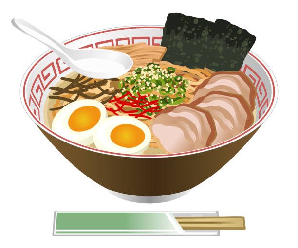

First Dish: Tonkotsu Ramen

Here we have Tonkotsu Ramen. This is an iconic Japanese noodle soup composed of a rich and creamy pork bone broth created by boiling pork trotters and bones. Toppings include dry seaweed, sliced charsu pork, green onion, boiled egg, and menma. If you do not want this dish, please click here to take a look at our second dish.